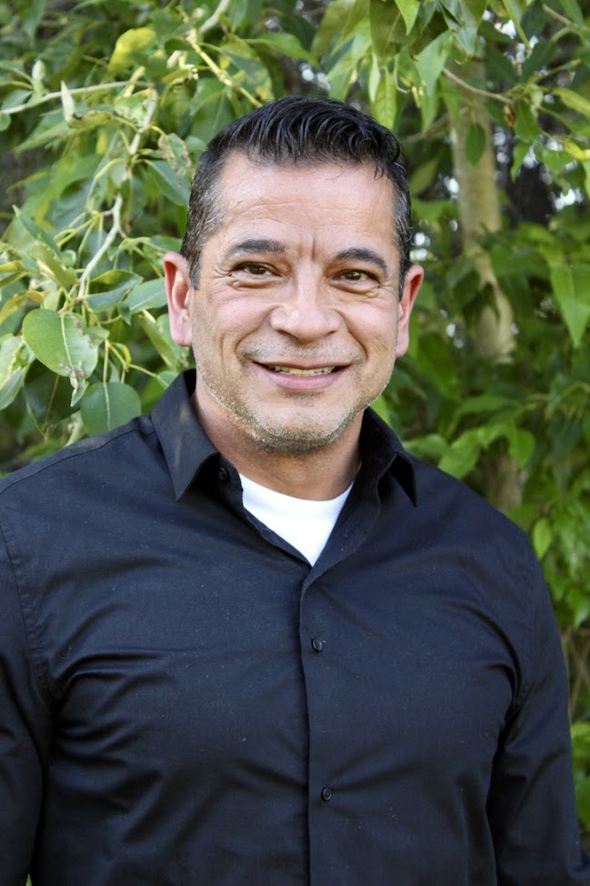

Our therapists / Kaisa

Kaisa
CBRS worker at Treasure Valley Mental Health, Boise
Whether it's a life transition, an injury, or an ongoing mental health challenge, Kaisa helps you rebuild your independence, one practical step at a time.
About Kaisa
Kaisa is driven by a genuine passion for client-centered care. She works closely with clients and their families to create a customized, realistic progress plan built around each person's own goals. She draws on a variety of therapeutic approaches and skills-training techniques, and can also fold in financial management and other practical skills needed to achieve personal autonomy.
Kaisa is currently completing a graduate degree in Clinical Mental Health Counseling at Lamar University. That theoretical grounding, combined with her ongoing field experience, gives her an in-depth understanding of the psychological impact of disability and life transitions, and lets her combine evidence-based counseling principles with practical, skills-focused rehabilitation techniques.
Her goal is to empower you to thrive mentally, emotionally, and practically within your community. Whether you're navigating a life transition, an injury, or ongoing mental health challenges, Kaisa is here to help you rebuild your independence. She provides Community-Based Rehabilitation Services (CBRS) at Treasure Valley Mental Health.
Kaisa's work is part of our Community-Based Rehabilitation Services: practical, one-on-one support in your home and community for the skills that make the rest of the week go better.
Common questions
How do I book an appointment with Kaisa?
Use the appointment request form with Kaisa pre-selected, or call 208-479-1116. We reply within one business day.
Does Kaisa take insurance?
CBRS is an Idaho Medicaid service. If you have Idaho Medicaid, ask us about eligibility; if you're not sure whether you qualify, we'll help you find out.
Can I see Kaisa online?
Yes. Kaisa meets clients in person at our office at 6126 W. State Street in Boise, and by telehealth anywhere in Idaho.
Other therapists at Treasure Valley Mental Health
Not quite the right fit? Every one of us offers a different background and style.

Joe Arzola, LCSW
Psychotherapist and practice administrator
Read Joe's profileJennifer Arzola, LPC
Psychotherapist
Read Jennifer's profileCharlene Holloway, LMSW
Psychotherapist
Read Charlene's profileLeann Vaterlaus, LMSW
Psychotherapist
Read Leann's profileKatie Aston, LMSW
Psychotherapist and CBRS provider
Read Katie's profileCathy Adolph
CBRS intern
Read Cathy's profileReady when you are.
Reaching out is the hardest step. The rest we'll figure out together.
Request an appointment with Kaisa